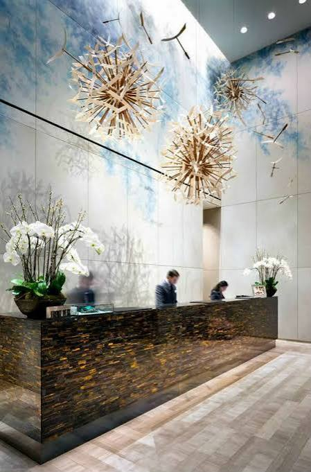

Ida · 9 agosto
- 🇪🇸 Madrid (MAD)
- ✈️ SV220 · 16:40 - 23:55
- 🇸🇦 Jeddah (JED)
- ✈️ SV834 · 01:55 - 15:55
- 🇲🇾 Llegada Kuala Lumpur (KUL): 10 agosto · 15:55

Saudia Airlines
Europcar · Ruta por carretera
Resumen de todas las reservas del viaje
| Fechas | Destino | Alojamiento | Notas |
|---|---|---|---|
| 10 - 12 agosto | 🌆 Malaca | Eco Tree Hotel Melaka | Primera parada tras el vuelo |
| 12 - 14 agosto | 🌿 Taman Negara | Benteng Taman Negara | Base para actividades de selva |
| 14 - 16 agosto | 🍃 Cameron Highlands | Hotel De'La Ferns | Zona de montaña y clima fresco |
| 16 - 19 agosto | 🏛 Georgetown | Airbnb 218 Tropicana Macalister | Base para Penang |
| 19 - 20 agosto | 🌴 Tok Aman Bali | Tok Aman Bali Beach Resort | Noche estratégica antes de Perhentian |
| 20 - 24 agosto | 🏝 Perhentian | The Barat Perhentian Resort | Barco y estancia isla |
| 24 - 25 agosto | 🌊 Kuantan | Timurbay · Kaze No Uta | Descanso antes de Kuala Lumpur |
| 25 - 29 agosto | 🏙 Kuala Lumpur | Eaton Residence | Base final y aeropuerto |
Datos prácticos para el viaje
Ubicaciones importantes para la ruta